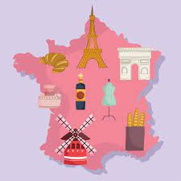

Cultura da França
A França é um dos principais centros culturais do mundo. O país dispõe de um rico arcabouço cultural que se manifesta através da literatura, da pintura, da música, da moda e do cinema. Este em específico tem as suas origens no país, com a invenção do cinematógrafo pelos irmãos Lumière no final do século XIX.
Muitos museus se espalham pelo território francês, por meio dos quais é possível vislumbrar um pouco da história e das diversas formas de manifestação cultural do país. O mais famoso deles fica em Paris, o Museu do Louvre. É nele que está localizada uma das obras de arte mais famosas do mundo, a Mona Lisa, do italiano Leonardo da Vinci. A capital francesa conta com, além de centenas de museus, uma série de teatros, casas de shows, bibliotecas, monumentos e prédios históricos, como é o caso da Catedral de Notre-Dame.
A gastronomia francesa é mundialmente apreciada e se tornou também um dos principais símbolos culturais do país, sendo a sua culinária reconhecida pela Unesco como patrimônio imaterial da humanidade. Destacam-se os preparos de confeitaria (patisserie), como os tradicionais macarrons, éclairs, crepes, tortas diversas e o mil-folhas. Os pães (baguettes, croissants, pão de chocolate) e queijos são também bastante conhecidos, além, é claro, dos vinhos.
Catedral de Notre Dame